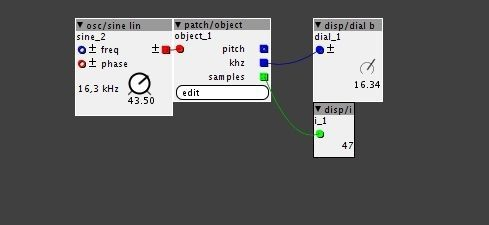
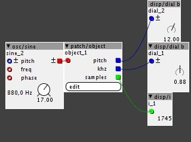

`
{kind=link}
it's alive!

NEW MODULE
LFO
"tempoSyncedLFO"
has a trigger input to sync it to another tempo
Rate control is done by multiplying or dividing the internal synced tempo, to keep it in ratio with the host
features 8 waveforms out at the same time
-sine
-cosine
-triangle
-"co"triangle
-saw
-ramp
-square
-pulse (with PW control)
has a phase modulation input to which all the waveforms respond (it uses a single phase generator)
MODULE UPDATE:
MUX
"smthRotator"
added "jumpsize" and exponential jump to the morphing control. So now it can smoothly rotate between the 8 inputs/outputs with different patterns
NEW MODULE
DYN
"maxsoftlimiter"
hard limiter with a pre-read that softens the limiter clipping effect (nearly no distortion, although at lower frequencies (below around 150hz) of a sine it starts to distort a bit. Not really noticable with other audio sources. I just call it character  ).
).
I think it might use a bit too much cpu.. though, how cool is that? smoothly fading in up 60 extra harmonics with each new step another "jumped" position somewhere within the set range
TWO NEW MODULES:
OSC
"supertrisaw"
supersaw oscillator with morph between saw and triangle and voice-detuning. Up to 8 voices.
"fm8xRandom"
Up to 8 sinewave voices of which 7 voices have a random harmonic number.
Features internal FM with randomised voice-routing.
NEW MODULE:
DIST
"3StageShaper"
and an update:
"3Shape"
3stage waveshaper with multiple mode-functions for each stage to add lots of extra harmonics to a signal and morph the spectrum. Loosely based on the ADE-10 reactive shaper from abstract data
If anyone wants some extra function and knows a video/picture that shows the shaping process, just let me know and I'll add it to the modes.
Modes of 3shape:
Except for mode 0 (filter), the ofs input and knob control a dc offset given to the audio going into the shaper.
mode=0 : filter->mod controls cutoff, ofs morphs through LP/BP/HP mode
mode=1 : mid-offset modifier->enlarges positive and negative side to reach the respective other range
mode=2 : sineshaper->mod controls gain of input
mode=3 : sined squareshaper->mod controls gain of input
mode=4 : sined squareshaper with wrap->mod controls gain of input
mode=5 : wrapper->mod controls gain
mode=6 : quantizer->mod controls quantification
mode=7 : triangle bounce->mod controls gain, the higher, the faster the triangle
NEW MODULES
MIX
"DesktopMix"
8 channel mixer with external volume and panning control, 8 aux, aux send level and aux send destination (per channel) and a stereo return input.
"Control"
controller object for a single channel of the desktopMix module
with volume (slider), pan(bidirectional knob), aux-select, aux-send level and channel peak readout meter.
"RdSt"
stereo peak readout for the desktopMix module
the module itself has no peakfollower, but that is build in in the desktop mixer. So it cannot be used as a peakmeter for other signals except smoothed signal.
FILT
"BiQMd"
multi-mode biquad filter based on the factory biquad.
has two outputs:
m= normal mode output (output modes= no-filter/thru, LP, HP and BP)
s=summed with input, (output modes=no-filter/thru, lowshelf, highshelf and peak)
The gain knob only works for the summed output, to control the level of the m output that is added to the original audio.
NEW MODULE
LFO
"LFOmorphor"
the morphor wavetable oscillator, but then as LFO (remember, you'll have to design a wavetable first, using the sculptor oscillator)
and I suddenly had an epiphany about the "frames" module... so, got that one working too 
so..
NEW MODULE
"LFO"
"animator"
this module works like the eurorack modular "frames" module, though it only features 1 animation output instead of 4.
By clicking the "add" button, you add a frame to the animation. This frame will then be recorded as "used" and the value of the value-knob will be recorded into the frame-position.
After each addition, delete or load it will draw a new animation into the internal animation table.
The position knob will then smoothly morph from frame to frame, where rise and fall rate will depent on the distance between frames and the difference between their respective values.
To start using it, first add the "0"position and the "63" position. This will make sure the animation will go from start to end (position "64" of the knob will select position "0" again).
Because of interpolation, a saw LFO can be used to drive the animation, where it will smoothly, but quickly fall back to the "0 " position when it reaches position "64". To do this, press the "ext" switch to activate the external driver input.
NEW MODULE:
DIST
"SRfold"
this module was actually just a try-out of a code.
though I found the response to different frequencies quite surprising. Has something like a fixed samplerate converter, though with higher frequencies, these come back in folding the stairs and create all kinds of alliasing harmonics
just try it out, maybe you like it, maybe not...
NEW MODULE
DIST
"diracExpo"
nonlinear shaper. Outcoming waveforms have a lot in common with their analogue counterparts.
code makes an exponential and inverse exponential copy of the signal.
the difference between the newest and previous sample is used to mix either from original to exponential or from original to inverse exponential, depending on the sign of the difference.
Range-control is bipolar, so the exponential and inverted exponential shaping process can be switch between before-peak or after-peak.
About the new Biquad filter. If i turn up the resonance all the way in LP mode, i get no source signal. Is that a bug or a feature? Seems like the signal gets weaker and weaker and then drops out completely when you turn the res towards max. On the synths (though mostly analog) i have worked on, the signal gets a bit lower once you turn res up, but not as much as the biquad filter. I may be just misunderstanding things here of course! And this filter is probalby 100% as you intented.
Seems like the signal gets weaker and weaker and then drops out completely when you turn the res towards max. On the synths (though mostly analog) i have worked on, the signal gets a bit lower once you turn res up, but not as much as the biquad filter. I may be just misunderstanding things here of course! And this filter is probalby 100% as you intented.
Some analogue synths have compensation circuits that attempt to even out the levels when resonance is increased. Some don't, and you'll find the same thing happens (though possibly not in such an extreme way).
a|x
I've just used the onboard biquad dsp formula for this. Guess it's somehow build into the axoloti code, as I can't seem to find any coefficient calculations..
I coded another biquad a while ago, but it didn't work 100% and was quite cpu heavy
It's part of the CMSIS DSP library that's included:
http://www.keil.com/pack/doc/CMSIS/DSP/html/group__group_filters.html
a|x
tomptidomtidom... now the khz2pitch and it's done..
take two of these, the scale module and the pitchshifter and you can auto-scale your voice/external synthesizer

yesh!

whoop whoop!
oef, didn't notice cpu yet... guess I'll need to do something about that khz2pitch conversion..(ps. is fixed now)
{kind=link}
{kind=link}